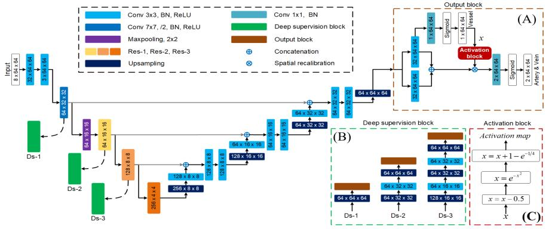

继IPMI后，我实验室又在医疗顶会MICCAI取得零的突破。我实验室硕士二年级研究生马文骜的论文“Multi-Task Neural Networks with Spatial Activation for Retinal Vessel Segmentation andArtery/Vein Classification”被MICCAI2019接收。

视网膜眼底图像的动静脉分类在临床上对于心血管疾病以及其他各种疾病的诊断有着重大的意义。传统的动静脉分类的过程主要分为两步，首先是在视网膜眼底图像上将所有的血管分割出来，再在血管分割的基础上利用拓扑学等其他算法进行动静脉分类。传统算法的局限性在于其过程较为复杂，且最终的动静脉分类的结果严重依赖于血管分割的效果。论文提出了一种利用空间加权的多任务深度学习网络，可以在视网膜眼底图像上实现同时将血管以及动静脉分割出来。特别地，论文在网络的输出端设计了一种利用高斯函数的空间激活模块，利用血管分割这样一个较为容易的任务，来指导更为复杂的动静脉分类。
Medical Image Computing and Computer Assisted Intervention (MICCAI) 包括计算机影像处理计算（MIC）以及计算机辅助介入（CAI）两个领域，是医学影像领域公认的国际顶级会议。今年MICCAI将在深圳举办，其投稿量相比往年上涨了70%。最终会议收录了540篇论文，录取率为31%。
论文由丁兴号教授与腾讯优图实验室郑冶枫博士共同指导。该论文的发表是我实验室在机器学习领域常年耕耘取得的又一突破性收获。
“恰同学少年，风华正茂。”马文骜是我实验室2017级硕士，但已经在医疗分割领域取得许多突破性成果。研一便在MICCAI两项国际比赛“MRBrainS13”和“MRBrainS18”上均取得了第一名的成绩，相关论文正在投送。此次论文是其在医疗分割领域又一突破性成果。